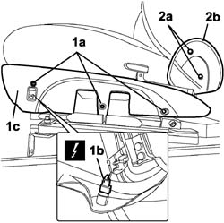
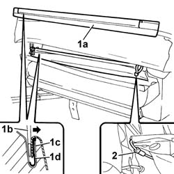
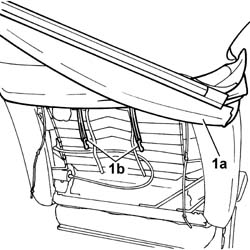
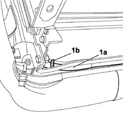
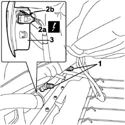
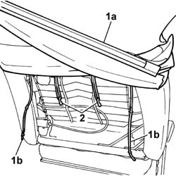
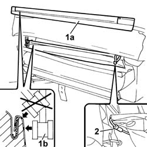

5580C44 front side bag module one lh or rh r r
- Path
- Procedures > 55 ELECTRICAL EQUIPMENT > 5580 SPECIAL ACCESSORIES > 5580C air bag system > 5580C44 front side bag module one lh or rh r r
- Kind
- repair procedure (removal / refitting; the operation number is the code)
- Applies to
- engines: 1.4 8v, 1.6 16v, 1.3 JTD 16V, 1.9 JTD 8V; all production periods
- Interactive page
- https://sloeber94.github.io/elrnDB-fDbl/en/#/2584973
Applies to: engines: 1.4 8v, 1.6 16v, 1.3 JTD 16V, 1.9 JTD 8V; all production periods
Applies to: engines: 1.4 8v, 1.6 16v, 1.3 JTD 16V, 1.9 JTD 8V; all production periods; only with equipment: 7 seater
 Removing
Removing
 Refitting
RefittingCarry out
Op. 7045B18 FRONT SEAT ARMREST - R.R..
Carry out
Op. 7045A25 FRONT SEAT BACKREST LUMBAR ADJUSTMENT KNOB (ONE), LEFT OR RIGHT - R.R..
Carry out
Op. 7045A13 FRONT SEAT WITH SIDE BAG (ONE) LEFT OR RIGHT - R.R..
1. Unscrew bolts (1a) securing the bag exterior side trim, disconnect the connection for the seat heater switch (1b) and remove the exterior trim (1c).
 | Name | Connector |
|---|---|---|
1b | Data not available yet |
2. Undo the bolts (2a) and remove the joint cover side trim (2b).
Carry out the same operation for the remaining side trim.

Applies to: engines: 1.4 8v, 1.6 16v, 1.3 JTD 16V, 1.9 JTD 8V; all production periods; only with equipment: 7 seater
1. Remove the lower edge of trim (1a); use a normal screwdriver with blade of suitable size (1b) to open the groove (1c) and release the trim profile (1d).
2. Release the retaining cables.

Applies to: engines: 1.4 8v, 1.6 16v, 1.3 JTD 16V, 1.9 JTD 8V; all production periods; only with equipment: 7 seater
1. Withdraw the trim (1a) and undo retaining clips (1b).

Applies to: engines: 1.4 8v, 1.6 16v, 1.3 JTD 16V, 1.9 JTD 8V; all production periods; only with equipment: 7 seater
1. Release the air bag lead (1a) beneath the bag, remove retaining band (1b) and then withdraw the lead from the cushion frame.

Applies to: engines: 1.4 8v, 1.6 16v, 1.3 JTD 16V, 1.9 JTD 8V; all production periods; only with equipment: 7 seater
1. Then move the padding with the seat trim as far as necessary and unscrew the nuts securing the side bag.
2. Disconnect the electrical connection (2a) and the earth connection (2b).
Name | Connector | |
|---|---|---|
2a | Driver's Side Bag |
Name | Connector | |
|---|---|---|
2a | Passenger Side Bag |
3. Remove the AIR BAG module.

Applies to: engines: 1.4 8v, 1.6 16v, 1.3 JTD 16V, 1.9 JTD 8V; all production periods; only with equipment: 7 seater
Refitting
RemovingPosition the air bag module in its seat and connect the electrical connectors.
Arrange the air bag lead beneath the cushion and restore the anchorage band.
1. Fit trim (1a) to the padding by passing the cables (1b) through the padding.
2. Anchor to the retaining clips to the lumbar adjustment device grid.

Applies to: engines: 1.4 8v, 1.6 16v, 1.3 JTD 16V, 1.9 JTD 8V; all production periods; only with equipment: 7 seater
1. Fit the lower edge of trim (1a) in its seat and tap into the channel using a rubber mallet (1b).
2. Secure the retaining cables.

Applies to: engines: 1.4 8v, 1.6 16v, 1.3 JTD 16V, 1.9 JTD 8V; all production periods; only with equipment: 7 seater
Position the jont cover side trim and secure it using the bolts. Carry out the same operation for the remaining side trim.
Connect the seat heater switch electrical connection and secure the cushion side trim with bolts.
| Name | Connector |
|---|---|---|
- | Data not available yet |
Carry out
Op. 7045A13 FRONT SEAT WITH SIDE BAG (ONE) LEFT OR RIGHT - R.R..
Carry out
Op. 7045A25 FRONT SEAT BACKREST LUMBAR ADJUSTMENT KNOB (ONE), LEFT OR RIGHT - R.R..
Carry out
Op. 7045B18 FRONT SEAT ARMREST - R.R..
Move the seat through all its various settings to ensure that movements take place without binding or noise.
Connect the battery leads disconnected previously.